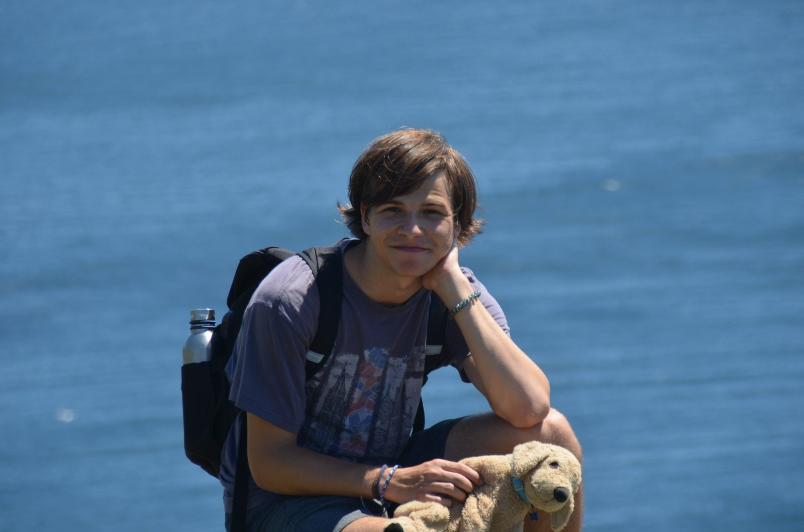
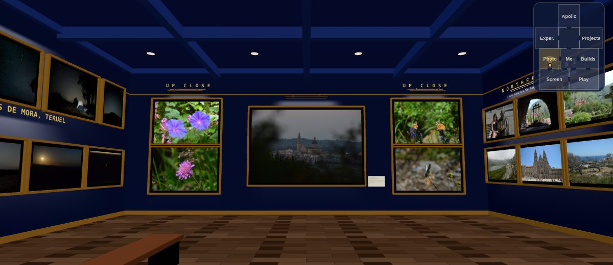

Javi A.Ibáñez Matles
Mechanical engineering student at the University of Rochester. Same story, two ways to see it.
Pick a version

2D · Portfolio
This one, if you have time
The classic site
Scroll through it: my path, classes with things to play with, builds, photos, Apollo and the rest. Quick, and works anywhere.
Open the portfolio →
3D · Mind palace
Walk through my mind palace
A 3D museum of my life: rooms for photography, builds, movies and games, my experience, Apollo scanned in 3D, and my projects. Click the floor to walk.
A lotof hours went into this one. Like, a LOT a lot.
Enter the mind palace →